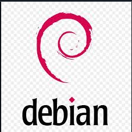
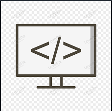

Kemampuan
Mikrotik
- Static Routing, Wireless, QoS, Tunnel, OSPF, Simple Queue
- VLAN pada switch Cisco untuk mengelompokkan jaringan secara logis
- Trunking (802.1Q) antar VLAN switch
- Pembatasan VLAN tertentu melalui trunk

Sysadmin
- Linux Fundamental
- Manajemen User dan File
- Manajemen Network dan Access
- DNS Server
- Web & Database Server
- Instalasi Wordpress dan mengedit website

Pemrograman
- HTML
- CSS
- JavaScript